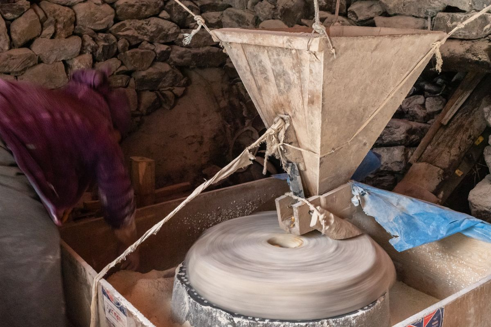
Why we still carefully dress our millstones by hand
Every few weeks Meera re-cuts the furrows in our granite stones. Here is why that slow job decides how cool and soft your flour is.
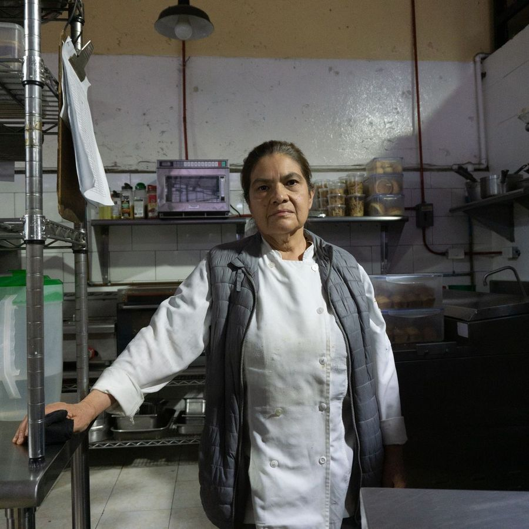
By Meera KapoorStories from Granary Lane: how we grind, what is in your flour, recipes from our kitchen and news from the twelve farms we buy from.
9 results

Every few weeks Meera re-cuts the furrows in our granite stones. Here is why that slow job decides how cool and soft your flour is.

By Meera Kapoor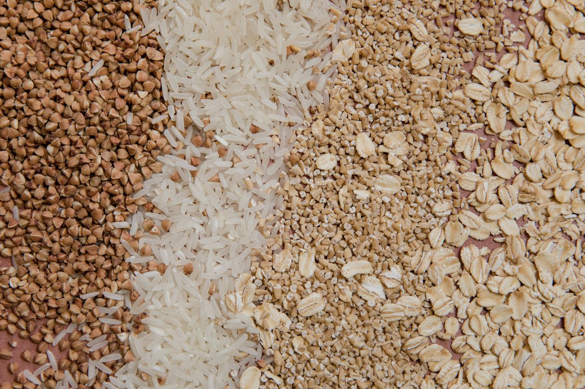
A plain-language look at the three parts of a wheat berry and what each one adds to a roti, from fibre to B vitamins.
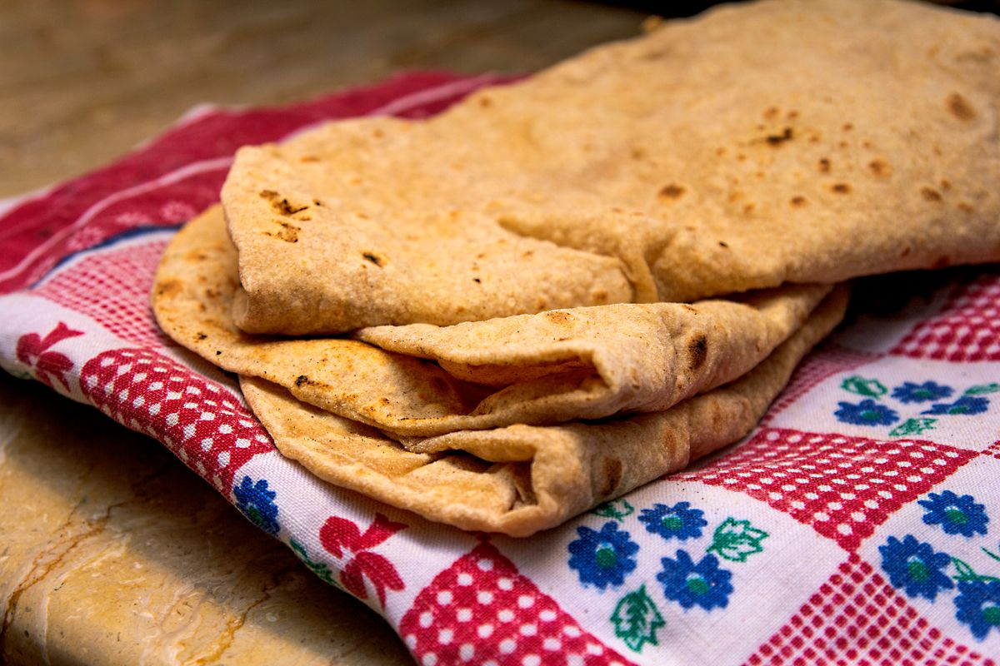
Our step-by-step method for delicious homemade rotis that puff beautifully on the flame and stay soft in the dabba until lunch.
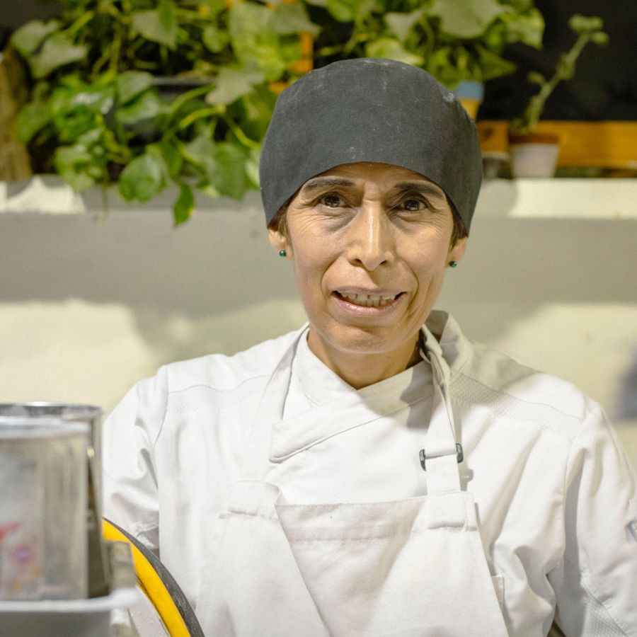
By Layla Haddad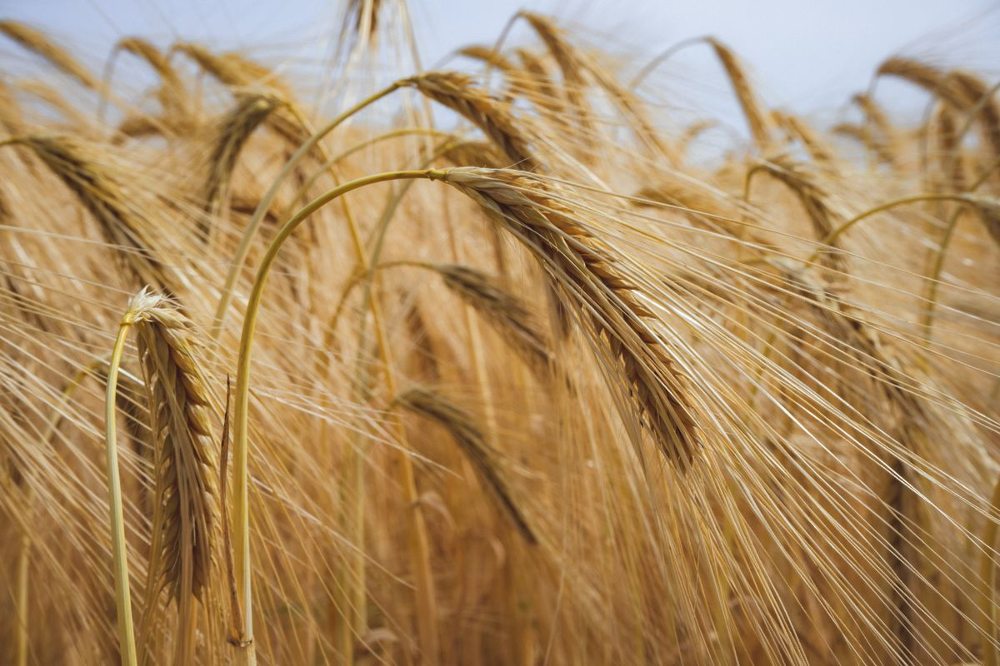
Noa spent harvest week on three of our twelve partner farms. What she tested, tasted and learned about this year's crop.
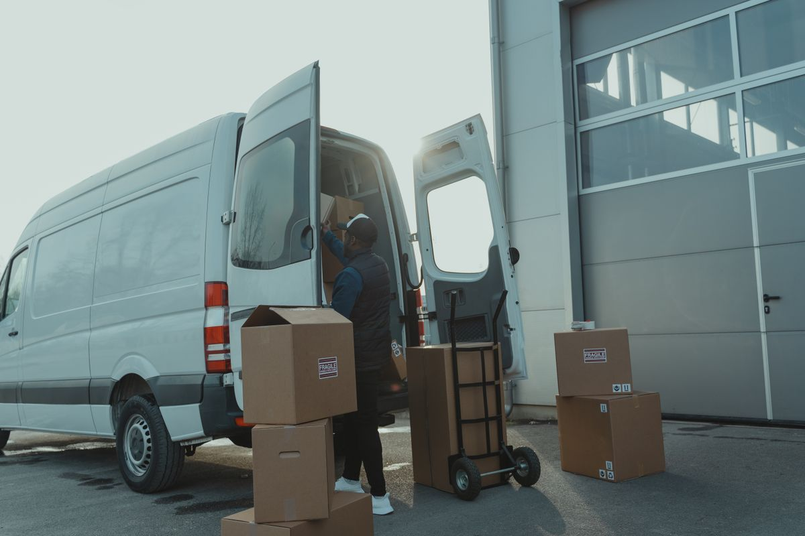
From 7 November you can choose the Evening 5-8 pm window on Saturdays as well as Tuesdays and Thursdays.
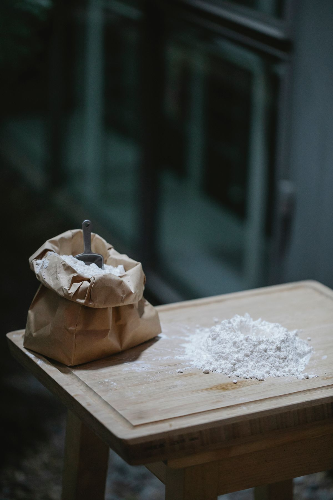
Heat is the enemy of flavour. A look at the stone speed, feed rate and cooling steps that protect the natural oils during milling.
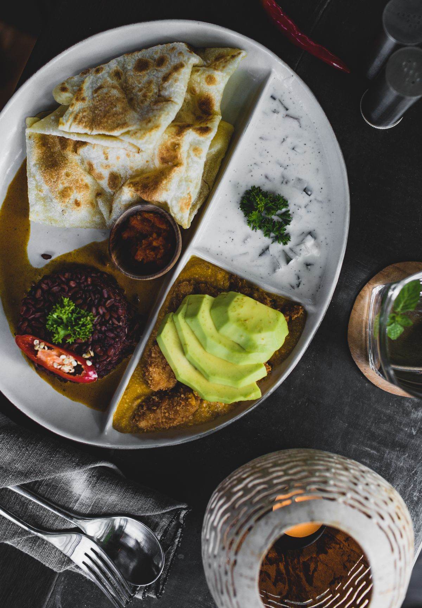
A calcium-rich breakfast made from our fresh ragi flour, with timings for a warm and a cool kitchen.
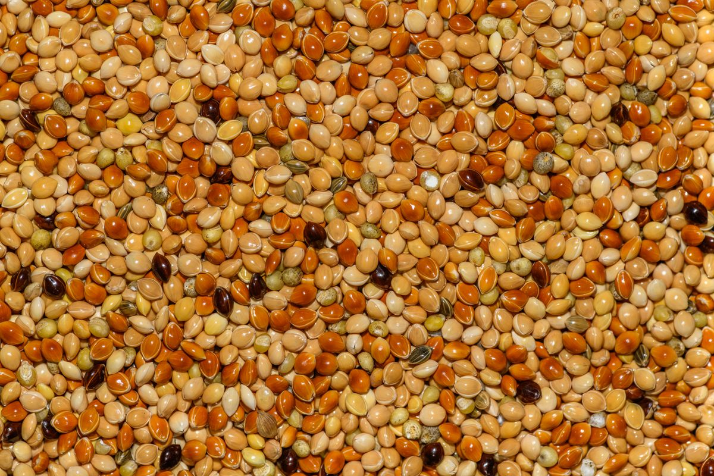
Which millet suits which dish, how much to blend with wheat, and how to avoid dense, crumbly rotis.
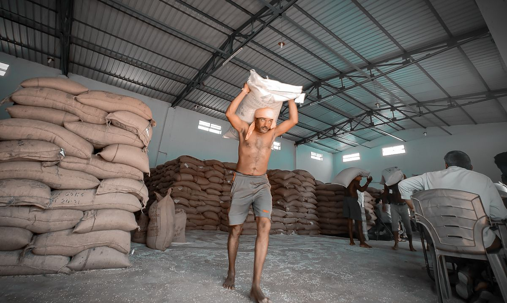
Five people, one mill and 3,200+ families. Introducing the Millstone team in their own words.
No posts match your search. Try another word or choose All.
Seasonal grain news, a new atta recipe and first notice of delivery changes. No spam, unsubscribe any time.